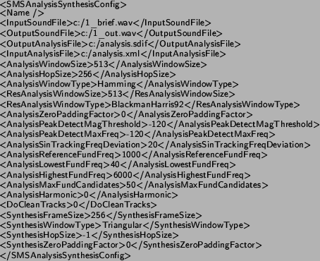

Next: SALTO Up: Sample applications Previous: Sample applications
At the time CLAM was started the MTG's flagship applications were SMSCommandLine and SMSTools. As a matter of fact one of the main goals when starting CLAM was to develop the substitute for those applications (see Annex A). The SMS Analysis/Synthesis example substitutes those applications and therefore illustrates the core of the research being carried out at the MTG.
The application has three different versions: SMSTools, which has a FLTK graphical user interface; SMSConsole, which is a command-line based version; and SMSBatch, which can be used for batch processing a whole directory. Out of these three it is clearly the graphical version that can find more usages, the other two are only used for very specific problems. The rest of this section will concentrate on the graphical version and only mention some differences with the other versions where strictly necessary.
The main goal of the application is to analyze, transform and synthesize back a given sound. For doing so, it uses the Sinusoidal plus Residual model (see section B). In order to do so the application has a number of possible different inputs:
1. An XML configuration file. This configuration file is used to configure both the analysis and synthesis processes.
2. An SDIF or XML analysis file. This file will be the result of a previously performed and stored analysis. The XML parser is rather slow and the XML format is rather verbose. For all those reasons the storing/loading of analysis data, although fully working, is not recommended unless you want to have a textual/readable representation of your analysis result, else you will be better off using the SDIF format (see next paragraph).
3. A Transformation score in XML format. This file includes a list of all transformations that will be applied to the result of the analysis and the configuration for each of the transformations.
Note that all of them can be selected and generated on run-time from the user interface in the SMSTools version.
From these inputs, the application is able to generate the following outputs:
1. An XML or SDIF Analysis data file.
2. An XML Melody file.
3. Output sound: global sound, sinusoidal component, residual component
Figure 3.7 illustrates the main blocks of the application.
The output of the analysis is a CLAM::Segment that contains an ordered list of CLAM::Frames. Each of these frames has a number of attributes, but the most important are: a CLAM::SpectralPeakArray that models the sinusoidal component (including information about sinusoidal track), a residual spectrum and the result of the fundamental frequency detection algorithm.
The output of this analysis can be (1) stored in XML or SDIF format, (2) transformed and (3) synthesized back.
In order to make the application work, a valid configuration XML file
must be loaded although the the default one can also be edited through
the graphical interface. This configuration includes all the different
parameters for the analysis/synthesis process. The following is an
example of a valid XML configuration:

We will now briefly describe the different parameters involved:
Global Parameters:
<Name>: particular name for the configuration file.
<InputSoundFile>: path and name of the input sound file to analyze.
<OutputSoundFile>: path and name of where the output synthesized sound file must be stored. The application will add a "_sin.wav" termination to the Sinusoidal component and a "_res.wav" termination the residual file name. In the graphical version of the program (SMSTools) though, this parameter is not used as when the output sound is to be stored, a file browser dialog pops-up.
<OutputAnalysisFile>: path and name of where the output analysis data is to be stored. The extension of the file can be .xml or .sdif. The application will choose the correct format depending on the extension you give. Not used in the GUI version as it is obtained from the dialog.
<InputAnalysisFile>: path and name of where the input analysis
data to is be loaded from. Not used in the GUI version as it is obtained
from the dialog.
Analysis Parameters:
<AnalysisWindowSize>: window size in number of samples for the analysis of the sinusoidal component.
<ResAnalysisWindowSize>: window size in number of samples for the analysis of the residual component.
<AnalysisWindowType>: type of window used for the sinusoidal analysis. Available: Hamming, Triangular, BlackmannHarris62, BlackmannHarris70, BlackmannHarris74, BlackmannHarris92, KaisserBessel17, KaisserBessel18, KaisserBessel19, KaisserBessel20, KaisserBessel25, KaisserBessel30, KaisserBessel35.
<ResAnalysisWindowType>: type of window used for the residual analysis. Available: Same as in sinusoidal. Recommended: as sinusoidal spectrum is synthesized using the transform of the BlackmannHarris 92dB, it is necessary to use that window in the analysis of the residual component in order to get good results.
<AnalysisHopSize>: hop size in number of samples. It is the same both for the sinusoidal and residual component. If this parameter is set to -1 (which means default), it is taken as half the residual window size. Recommended values range from half to a quarter of the residual window size.
<AnalysisZeroPaddingFactor> Zero padding factor applied to both components. 0 means that zeros will be added to the input audio frame till it reaches the next power of two, 1 means that zeros will be added to the next power of two etc...
<AnalysisPeakDetectMagThreshold>: magnitude threshold in dB's in order to say that a given peak is valid or not. Recommended: depending on the window type and the main-to-secondary lobe relation and the characteristics of the input sound, a good value for this parameter may range between -80 to -150 dB.
<AnalysisPeakDetectMaxFreq>: Frequency of the highest sinusoid to be tracked. This parameter can be adjusted, for example, if you are analyzing a sound that you know only has harmonics up to a certain frequency. Recommended: It depends on the input sound but, in general, a sensible value is 8000 to 10000 Hz.
<AnalysisSinTrackingFreqDeviation>: maximum deviation in hertz for a sinusoidal track.
<AnalyisReferenceFundFreq>: in hertz, reference fundamental.
<AnalyisLowestFundFreq>: in hertz, lowest fundamental frequency to be acknowledged.
<AnalyisHighestFundFreq>: in hertz, highest fundamental frequency to be acknowledged.
<AnalyisMaxFundFreqError>: maximum error in hertz for the fundamental detection algorithm.
<AnalyisMaxFundCandidates>: maximum number of candidate frequencies for the fundamental detection algorithm.
<AnalysisHarmonic>: if 1, harmonic analysis is performed
on all segments that have a valid pitch. In those segments the track
number assigned to each peak corresponds to the harmonic number. On
unvoiced segments, inharmonic analysis is still performed.
Synthesis Parameters:
<SynthesisFrameSize>: in number of samples, size of the synthesis frame. If set to -1, it is computed as (ResAnalysisWindowSize-1)/2.
<SynthesisWindowType>: type of window used for the residual
analysis. Available: Same as in sinusoidal.
Morph Parameters
<MorphSoundFile>: Optional name of the second file to do a morph on. Only necessary if a morphing transformation is planned. Note that the file to morph will be analyzed with the same parameters as the input sound file and that it must have the same sampling rate.
Apart from storing the result of the analysis, more interesting things can be accomplished. The first thing that may be interesting to do is to synthesize it back, separating each component: residual, sinusoidal, and the sum of both.
To transform your sound an XML transformation score must be loaded or created using the graphical transformation editor available in SMSTools. New transformations can be implemented and added to the CLAM repository very easily.
We will now comment how the application architecture is organized. Figure 3.9 illustrates its UML class diagram.
The main class of the application is the SMSApplication class. This is an abstract class (thus cannot be instantiated), but contains the core of the process flow. The three derived classes, SMSTools, SMSBatch and SMSStdio implement the particular versions of the base class.
So let us briefly mention what this base class holds inside. All the methods illustrated in the diagram (LoadConfig, Analyze,...) correspond to functionalities of the program that, in the case of the GUI version, are mapped directly to menu options.
The associated SMSAppState class is responsible for maintaining the current state of the application. The boolean (mHaveConfig, mHaveInputAudio,....) attributes of the class hold important values to control the flow of the program because they inform of whether a previous action has taken place and the desired operation can then be invoked.
The class has two ProcessingComposite attributes (see 3.2.2), instances of the SMSAnalysis and SMSSynthesis classes. These ProcessingComposites are configured when the global configuration is loaded and then run from the Analyze and Synthesize methods. Some intermediate Processing Data (a Segment, a Melody and different Audio objects) are used to hold the input/output data generated during the process. These data are then stored/played using the corresponding method (i.e. StoreAnalysis or PlayOutputSound).
Although the SMSApplication class concentrates most of the functionality of the application and has a great deal of operations, these methods are fairly simple and rarely need more than 10/20 lines of code. In order to invoke an analysis, for instance, only the SMSAnalysis::Do method needs to be called. This is possible because these Processing Composites hide all the processing complexity. If we take a look again to the UML diagram we see that these classes contain inside a great deal of other Processing classes. Let us enumerate them and their basic functionality.
Inside the SMSAnalysis we have:
SpectralAnalysis: Performs an STFT of the sound. For doing so, it holds a number of Processing objects inside, namely a WindowGenerator, an AudioMultiplier, a CircularShift (for zero-phase buffer centering) and an FFT. Note that the SMSAnalysis has two instances of this class: one for the sinusoidal component and another one for the residual. This Processing Composite is quite complex in itself but we won't go into details.
SpectralPeakDetect: Implements an algorithm for choosing the spectral peaks out of the previously computed spectrum.
FundFreqDetect: Processing for computing the fundamental frequency.
SinTracking: This Processing performs sinusoidal tracking or peak continuation from one frame to the next one. It implements an inharmonic and harmonic version of the algorithm.
SynthSineSpectrum: Once we have analyzed the sinusoidal component and we have the continued peaks we have to synthesize it back to spectrum in order to compute the residual component. This is the Processing in charge of this synthesis of the sinusoidal component.
SpectrumSubstracter2: Once we have the sinusoidal synthesized spectrum and the original one (coming out from the residual Spectral Analysis), we can subtract them in order to obtain the residual spectrum.
The SMSSynthesis Processing Composite contains:
PhaseManagement: This Processing is in charge of managing phase of spectral peaks, from one frame to the next one.
SynthSineSpectrum: As already commented in the SMSAnalysis, this object is in charge of creating a synthetic spectrum out of the array of spectral peaks.
SpectrumAdder2: It is used to add the residual and the synthesized sinusoidal spectrum.
SpectralSynthesis: This processing composite implements the inverse STFT. That is, is the object in charge of computing an output audio frame from an input spectrum. The SMSSynthesis class has three instances of this class: one for the global output sound, one for the residual and one for the sinusoidal component. The SpectralSynthesis Processing Composite has the following processing inside: an IFFT, two WindowGenerators (one for the inverse Analysis window and one for the Synthesis Triangular window), an AudioProduct to actually perform the windowing, a CircularShift to undo the circular shift or buffer-centering introduced in the analysis and an OverlapAdd object to finally apply this process to the output windowed audio frames. It is fairly complex in itself and we would need to go into too many signal processing details in order to explain it completely (see Annex B for more details on these signal processing algorithms).
2004-10-18